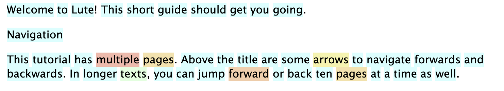
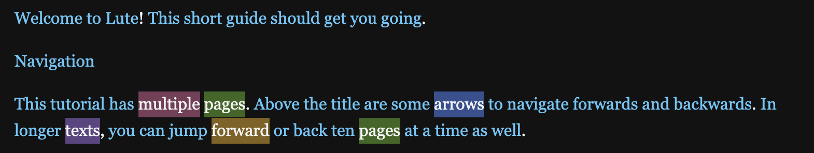
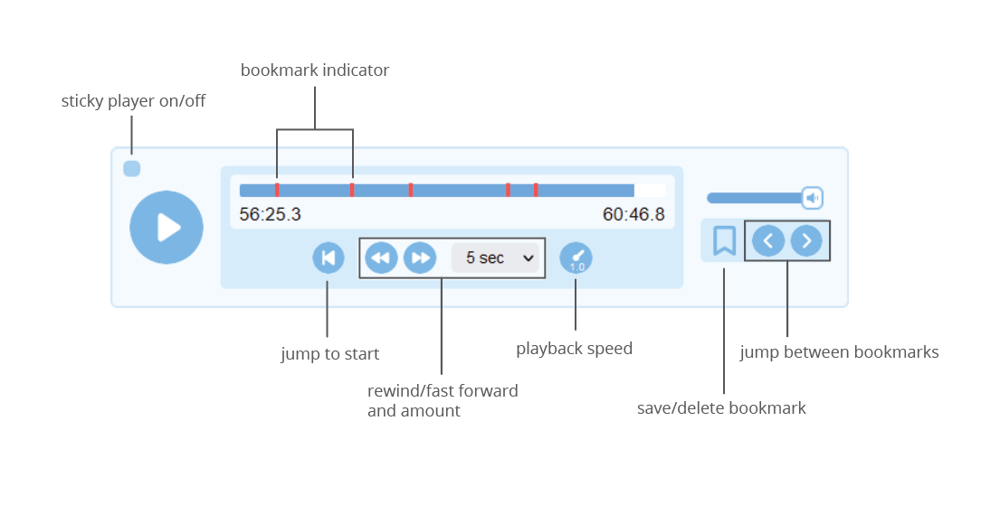

Introduction
LUTE (Learning Using Texts) is a standalone web application that you install on your computer and read texts with.
Lute contains the core features you need for learning through reading:
- defining languages and dictionaries
- creating and editing texts
- creating terms and multi-word terms
In addition, Lute has features missing from other tools, which I consider absolutely essential:
- Defining "parent terms". For example, for Spanish, hablar (to speak) is the root form of habló (he spoke). In Lute, you can set a root form as the Parent Term, and the definition for that root form is available for all child terms. Also, when you ask Lute for sample sentences using a term, it includes sentences for all related terms as well.
- Adding word images. This helps learning, and is more interesting and entertaining than adding reams of text.

This 5-minute video gives a very brief demonstration and shows how easy it is to install Lute:
Lute has many other features, see the sidebar and browse around.
Lute is a work in progress, as is all software, but it works. I've been using it to learn Spanish, and it's super.
Background
Lute -- Learning Using Texts -- is software for learning foreign languages by reading.
In summary, you import foreign language texts into Lute, and read through them, creating saved definitions and associations for words as you read. As you read more, you continue to build your personal dictionary.
I am currently using Lute to read texts in Spanish, and it works great. It should work very well for other left-to-right languages like French, German, English, Italian, Classical Chinese, etc. Lute can also handle right-to-left languages like Persion, and with some extra tools installed, Japanese.
Lute has a few features which I feel are critical:
- Parent terms. For example, in Spanish, "hablo" is a conjugation of "hablar". With Lute, you can specify these links, and see how different forms are used in the texts you read.
- Images. Lute lets you add an image to words. It's much more fun and intuitive to attach a picture of a cat to a Spanish term "gato".
In addition, the spirit of Lute is full open-source software:
- Installed locally. I am leery of sending an data to a company that may change their direction or disappear, or change their pricing.
- Data control. Lute runs on your machine. You own the data, you can do what you want with it. Ultimately, I hope for Lute to interoperate seamlessly with other tools, rather than become yet another closed garden.
- Free, no limits. I've benefitted hugely from free tools such as Anki -- my hope is that Lute, or a successor, makes an impact.
Lute alternatives
There are other projects out that Lute took inspiration from:
Lute v1 and v2 started in late 2022 as a rewrite of LWT (Learning With Texts), overhauling the architecture, data structure, and algorithms, and adding critical features. Lute v3 (this project) is a full Python rewrite to address installation and maintenance/sustainability issues. Lute would never exist without LWT and Hugo's LWT fork, so a big thanks to those projects.
Should I use Lute, LWT, Hugo's fork, or something else?
Sensible question, so here's my take:
If you just want to use something, I'd recommend Lingq! It's a paid solution, they deal with the software and the headaches, you just pay for it and use it. They have pre-selected texts and a wide customer base. With any other software, you're going to pay in time. I've tried to simplify and streamline Lute to reduce that time investment, but it will always be there.
If you want to run your own thing on your machine, the options I can see are:
- The original LWT project is, as far as I can tell, still massively popular. Even if the code is old, and it might have bugs or be slow, it has the advantage of being tried-and-tested, and you might find people who can help you with issues.
- FLTR, a Java project by the same author of LWT.
- Hugo Fara's LWT fork has taken the original project and refined the code, but has kept the same features and overall design/architecture.
So why even consider Lute?
At present (late 2023), the main features differentiating Lute v3 are parent terms and images. The installation has been drastically simplified -- with the right tools (Python or Docker), you can be up and running in a few minutes.
Secondary reasons: Lute feels faster and lighter than LWT, and it has just enough features to be useful. The UI's a bit leaner, if that matters to you.
More geeky reasons, yet still important (to me): Lute is a full redesign of the original LWT idea using modern code and architecture. It accomplishes almost the same feature set as LWT at a fraction of the code size and complexity. It also has a full set of automated tests for project stability. This might not mean much to regular peeps who just want to learn languages, but from the perspective of project maintainability and growth, it's paramount.
(Also, if you are into software, like the idea of LWT, and want to contribute to an open-source project, I believe that Lute is a compelling place to start. It uses Python and Flask, which are good things to know, and has good test coverage so you can hack at things without fear.)
Why might you NOT use Lute?
As good as Lute is, it might not be for you. Below are some things that may lead you to decide to postpone using Lute for now:
| Item | Notes |
|---|---|
| Single-word audio | Lute has an audio player for books, but you can't click a single word to hear its audio. |
| Support "non-consecutive multiword terms" | Some languages, like German and Dutch, have terms that that split apart. For example, in German, the verb "einladen" can be split into "laden ... ein": "Ich lade dich zu meiner Party ein." I don't think any tool currently solves this well. See the notes at on this GitHub issue. |
| Flashcards/testing | Lute is designed for reading only, there is no testing. |
| Automated or bulk translation | Lute isn't designed to automatically create bidirectional readers, or to auto-create translations. You can use Lute's Term CSV import feature, along with something like Google Sheets, to imitate that. |
There are other smaller features that Lute doesn't have yet, but the above are the biggest ones that may be dealbreakers for you at the moment.
Installation
There are currently three different methods to install Lute v3 on your system, with different system requirements:
I can't recommend any particular installation method: they all have trade offs. My personal preference is to install using pip. If you're studying Japanese and your system supports Docker, I'd recommend using Docker as it the lute3 image includes some other needed dependencies.
Windows users: The instructions below are for Unix/Mac users. Windows installations are similar, but have some challenges, so see Installing on Windows.
Using pip
System requirements:
- Python 3.8+ and pip. Run
python3 --versionfrom the terminal to check. - Japanese learners will also need to install MeCab
Lute can be installed from https://pypi.org/project/lute3/. Here's a summary of the instructions from that page for Linux and Mac, Windows will be similar. All of these commands are run from the Terminal.
Create a Lute folder. This can be anywhere on your system.
mkdir -p ~/my_lute
cd ~/my_lute
Set up the virtual environment. If this gives an error, check your Python installation (see "system requirements").
python3 -m venv myenv
source myenv/bin/activate
Install Lute.
pip install --upgrade lute3
Start Lute.
python -m lute.main
# Create a Lute folder
mkdir -p ~/my_lute
cd ~/my_lute
# Set up virtual environment. If this line gives an error, see "system reqs" above.
python3 -m venv myenv
source myenv/bin/activate
# Install
pip install --upgrade lute3
# Start
python -m lute.main
Now open your web browser to http://localhost:5000. Leave the terminal window open while you're using Lute. When you're done, hit Ctl-C to stop Lute.
You can start lute on a different port if needed:
python -m lute.main --port 9876
Using Docker
System requirements: Docker1
Lute has a pre-built docker image at https://hub.docker.com/r/jzohrab/lute3. There are notes on that page about the image.
Using a docker-compose.yml file:
Create a Lute folder. This can be anywhere on your system.
mkdir -p ~/my_lute_docker
cd ~/my_lute_docker
Create some subfolders (These subfolders will be mounted to the container)
mkdir data
mkdir backups
Create a file named docker-compose.yml in the my_lute folder with the following content:
version: '3.9'
services:
lute:
image: jzohrab/lute3:latest
ports:
- 5000:5000
volumes:
- ./data:/lute_data
- ./backups:/lute_backup
Run it:
docker compose up
# Create Lute folders
mkdir -p ~/my_lute_docker
cd ~/my_lute_docker
# (These subfolders will be mounted to the container)
mkdir data
mkdir backups
# Docker-compose.yml:
cat > docker-compose.yml <<EOF
version: '3.9'
services:
lute:
image: jzohrab/lute3:latest
ports:
- 5000:5000
volumes:
- ./data:/lute_data
- ./backups:/lute_backup
EOF
# Run it:
docker compose up
As with the pip installation, you can change the port if your machine is already using port 5000, e.g.:
...
ports:
- 9876:5000
...
From source
Developers and gearheads can install Lute from source: see the Lute repository.
If you want to develop Lute, you'll also need to install MeCab.
If you install from source and tinker with the code, make sure you can update later! See Keeping up-to-date when installing from source.
Docker is a containerization platform that allows you to run applications in a sandboxed environment (ref the Docker documentation). Docker is not available or is problematic on some systems, particularly Windows.
Windows
Windows sometimes makes installations more challenging due to OS variants and lack of support for som tech. Some users have provided more detailed instructions for Windows:
- The YouTube channel is4ndroide made a fantastic video on installing Lute for Windows.1
- Windows 10 (32 bit) using Python and pip
- Windows using Docker
Discord user Keruah noted that you may need to set the Execution Policy for the shell script: "... when you launch the environment script, your Windows may say that you don't have permissions ... open PowerShell, and type Set-ExecutionPolicy -ExecutionPolicy RemoteSigned to define the policy." -- See about Execution Policies - PowerShell
Windows 10 (32 bit) using Python
(Instructions courtesy of user axmanalex, so you'll see that username in these notes.)
A summary of what you're doing:
- Download and install Python 3.8.0, and put Python on your system
PATH - Create a directory in your Documents
- Install Lute into a virtual environment, and start it up.
Detailed instructions
-
Download Python version 3.8.0: https://www.python.org/downloads/windows/
-
Install Python with admin privileges, tick "Add python 3.8 to PATH" and click on install.

- When the install is done, open CMD with admin privileges and write "python --version" to check it works. You should see something like the below:

- Still in CMD, type
cd C:\Users, hit Enter, then typedirand hit Enter. Your screen should look like this:
This shows all users on your machine.
- Now you'll
cd(change directory) to your personal user directory. This user's name wasaxmanalex, so he wrote
cd axmanalex
and then hit Enter.
Use your own user name instead of axmanalex, and hit Enter. Then type dir and hit Enter. Your screen should look like this:

- You'll install Lute in one of your personal folders. axmanalex chose to install it in
Documents, so he wrote
cd Documents
and hit Enter.
Replace Documents with where you want to put Lute.
- Make a folder for Lute with the following commands (hit Enter after each line):
mkdir my_lute
cd my_lute
- Create and activate your "virtual environment" with the following commands (hit Enter after each line):
python -m venv myenv
.\myenv\Scripts\activate.bat
- Install Lute
pip install --upgrade lute3
and press Enter.
Lute will now start to download and install all the components. Errors will be printed as red text -- if you get any errors, google for solutions or ask for help in Discord.
- Start it up!
python -m lute.main
and press Enter. The screen should look something like this:
The server should be running.
Open any browser (Chrome, Firefox, etc), and go to http://localhost:5000/. It should look like this:

... and that's it, you're up and running!
Leave this command prompt window running while you're using Lute.
Stopping Lute
When you're done, if you want to stop the server, press Ctrl + C on your cmd and close it.
Restarting Lute
To run the server again, open CMD again with admin privileges, and at the prompt enter the following commands (hitting Enter after each line):
cd C:\Users\ ... path to your lute ...\
.\myenv\Scripts\activate.bat
Note that the route depends on where you installed your Lute. Here's what axamanalex writes:
cd C:\Users\axmanalex\Documents\my_lute
.\myenv\Scripts\activate.bat
Then start Lute again:
python -m lute.main
and press Enter. The server starts again.
Windows using Docker
These are step-by-step instructions for installing Lute using Docker.
Note: this assumes that you have Docker already. If not, install Docker for Windows. If your system doesn't support Docker, you can't use it!
1. Start Docker Desktop.
This starts the service that will actually run the Lute Docker container.
2. Create the necessary folders.
-
Go to any folder, for example, your "My Documents" folder.
-
Create a folder called
my_lute, however you'd like (e.g., right-click on a blank space in the folder location, select "New" then "Folder", and rename the foldermy_lute) -
Double-click on the
my_lutefolder to enter it. -
Within that folder, create two more folders,
dataandbackups.
3. Create docker-compose.yml
- Open Notepad, and create a new file with the following content:
version: '3.9'
services:
lute:
image: jzohrab/lute3:latest
ports:
- 5000:5000
volumes:
- ./data:/lute_data
- ./backups:/lute_backup
- Save this file into the
my_lutefolder you created above.
4. Open a command prompt, and go to the my_lute folder
Your system may vary on how to find the command prompt ... Google can help!
-
Open the "Start" menu and type "cmd". Click "Command Prompt".
-
In the command prompt, go to your
my_lutedirectory by using thecdcommand:
cd "C:\My Documents\my_lute"
- To confirm you're in the right spot, at the command prompt type
dir. You should get something like this:
dir
Volume in drive C has no label.
Volume Serial Number is B86A-EF32
Directory of C:\My Documents\my_lute
11/30/2023 01:40 PM <DIR> .
11/30/2023 01:40 PM <DIR> ..
11/30/2023 11:05 AM <DIR> data
11/30/2023 11:05 AM <DIR> backups
11/30/2023 01:16 PM docker-compose.yml
I'm totally paraphrasing here ... The important thing is that your directory contains the data, backups, and docker-compose.yml file!
5. Run it!
If everything is set up, and your Docker Desktop is running, then in that same command prompt, type this:
docker compose up
This should kick off the docker image download. Your terminal will show a bunch of messages showing progress, and Lute will start.
Troubleshooting
Running docker compose up may give some errors. Unfortunately, every system is different, and here Google is your friend.
- The error "error during connect: this error may indicate that the docker daemon is not running" is most commonly caused by the Docker daemon (the service) not running. So be sure you've started your Docker Desktop.
- Per the StackOverflow post "Docker cannot start on Windows", you may need to relaunch your command prompt as "administrator"
Note: this is for non-Docker users studying Japanese only (or devs who are working on Lute)
Lute users who are studying Japanese will need to install MeCab and an appropriate dictionary for parsing Japanese text. If MeCab is not installed or not on your PATH, you will not be able to parse Japanese texts.
Installation
Mac
You can install MeCab and a dictionary using homebrew.
If you don't have homebrew installed, then first get homebrew. Then:
brew install mecab
brew install mecab-ipadic
Windows
The link https://taku910.github.io/mecab/ has a link under Binary package for MS-Windows: mecab-0.996.exe: ダウンロード. Verify this link and download.
If your system is 64 bit, or the above MeCab is not working, try downloading from this link instead: MeCab 64bit
Here's a video on installing MeCab for Lute, kindly put together by a Lute user:
When installing MeCab, choose the UTF-8 charset (I'm not sure if another charset will work).
After installation, add the MeCab bin path to the PATH environment variable. If you don't know how to edit the Environment Variables, see this video: How to Set Environment Variables in Windows 11. Usually the MeCab bin path as C:\Program Files\MeCab\bin, but it might be C:\Program Files (x86)\MeCab\bin ... make sure you use the right one!!
Verifying on Windows
To check that your installation and PATH are correct, open up a new command window, and type mecab at the prompt.
- If anything is wrong, you'll get an error like
The term 'mecab' is not recognizedor similar. Fix your PATH and try again. - If you type "mecab" and hit return and nothing happens, then your mecab is actually installed correctly, as mecab is waiting to parse your input. Hit return, and you should get an "EOS" message -- that's mecab responding with "end of sentence". Hit Control-C to quit mecab.
Continuing on
After installing MeCab, you may need to shut down Lute if it's running, open a new Terminal (command window), and restart Lute, for the PATH changes to take effect.
Linux
Use apt-get:
sudo apt-get update -y
sudo apt-get install -y mecab mecab-ipadic-utf8
Verification
Test mecab from the terminal:
$ mecab
すもももももももものうち
すもも 名詞,一般,*,*,*,*,すもも,スモモ,スモモ
も 助詞,係助詞,*,*,*,*,も,モ,モ
もも 名詞,一般,*,*,*,*,もも,モモ,モモ
Lute configuration
If everything is installed correctly, you will see a Japanese sample story when you start Lute. If you don't see that story, then either your MeCab isn't set up correctly, or Lute can't find it.
Lute uses a library called natto-py that usually finds and uses MeCab automatically. If it can't, you'll need to specify the path to your MeCab library in Lute's Settings (top right menu bar). There is a box for you to enter your MeCab path and do a test parse. If that test succeeds, you're good to go. If not, jump into the Lute Discord.
Sample MECAB_PATH values
The natto-py gives a few possibilities for the path, which may just be examples and not really valid.
| System | MECAB_PATH |
|---|---|
| Mac OS | /usr/local/Cellar/mecab/0.996/lib/libmecab.dylib |
| bash on UNIX/Linux | /usr/local/lib/libmecab.so |
| Windows | C:\Program Files\MeCab\bin\libmecab.dll |
| Lute's docker container | /lib/aarch64-linux-gnu/libmecab.so.2 |
| Linux Mint | /lib/x86_64-linux-gnu/libmecab.so.2 |
Finding the mecab library
These are various notes about finding MeCab, hopefully it will help you find your MeCab library.
When setting up MeCab in Docker and GitHub, I found the mecab library like this:
which mecab
# make note of the path, then:
ldd </path/returned/by/which/mecab>
returned:
linux-vdso.so.1 (0x00007ffd280a8000)
libmecab.so.2 => /lib/x86_64-linux-gnu/libmecab.so.2 (0x00007f9fe7cdf000)
libc.so.6 => /lib/x86_64-linux-gnu/libc.so.6 (0x00007f9fe7a00000)
libstdc++.so.6 => /lib/x86_64-linux-gnu/libstdc++.so.6 (0x00007f9fe7600000)
libm.so.6 => /lib/x86_64-linux-gnu/libm.so.6 (0x00007f9fe7919000)
/lib64/ld-linux-x86-64.so.2 (0x00007f9fe7dc4000)
libgcc_s.so.1 => /lib/x86_64-linux-gnu/libgcc_s.so.1 (0x00007f9fe7cbb000)
For this OS, the correct library was actually libmecab.so.2.
Language parser plugins
Feature introduced in Lute 3.4.0.
As of May 2024, only a Mandarin Chinese parser is available. See the Lute development wiki for notes on how to develop a parser for other languages.
Some languages, such as Mandarin Chinese, require specialized parsers.
Since adding support for all languages would lead to code bloat, Lute adds support for specialized parsers through plug-ins that you install in your Lute pip environment.
| Language | Pypi package name | Pypi URL |
|---|---|---|
| Mandarin Chinese | lute3-mandarin | README |
If you add a plugin, see the linked README in the above table for any configuration notes.
To install a plugin:
- Install Lute itself, if you haven't already (as described on prior pages).
- Stop Lute if it's running. Leave your virtual environment activated!
- Install the plugin, e.g.
pip install lute3-mandarin - Restart Lute as usual (e.g.,
python -m lute.main, or however you start it)
When you start Lute, you'll see the plugins are loaded, and all enabled parsers are listed:
$ python -m lute.main
Starting Lute.
...
Initializing app.
Initializing parsers from plugins ...
Enabled parsers:
* Space Delimited
* Turkish
* Japanese
* Classical Chinese
* Lute Mandarin Chinese
...
Troubleshooting
Tech is complicated, tech can break.
As always, Google is your best friend here.
CERTIFICATE_VERIFY_FAILED
One user (on a Mac, pip install of Lute) reported an error on doing image or dictionary lookups:
Mac OSX python ssl.SSLError: [SSL: CERTIFICATE_VERIFY_FAILED] certificate verify failed (_ssl.c:749)
Likely solutions are outlined in this StackOverflow post.
Beta releases
When you do a pip install or --upgrade, pip will automatically use the latest stable release.
If you're feeling daring, you can also install Lute beta releases. As Lute's developer/owner, I use the beta releases in my personal prod environment, actually using it to ensure there aren't any problems. When the beta is good, it's made into a stable release.
Beta releases end with b<number>, and are betas for the next planned release. This follows the Python recommendation.
For example, if the current prod release is 3.0.4, the next planned release will be 3.0.5. Betas before that release will be 3.0.5.b1, .b2, etc, so the numbering will be:
3.0.4
3.0.5b1
3.0.5
To install a beta release, you have to fully specify the version number, e.g.
pip install lute3==3.0.5.b1
Beta releases are not released to Docker Hub.
Starting and stopping
These scripts are on a Mac; Linux will be the same, Windows slightly different. They're rough guides only, your system may vary.
You can usually write a script to make your life easier.
If using pip
Assuming you're using venv:
cd ~/my_lute
# Activate the virtual environment
source myenv/bin/activate
# Start
python -m lute.main
# ... Open your web browser to http://localhost:5000.
# Leave the terminal window open while you're using Lute!
# When done, hit Ctl-C to stop
deactivate
Custom config.yml
By default, Lute stores your data in the appropriate "user data" directory, as determined by the PlatformDirs library.
If you want to change that or a few other basic settings, you can create a custom config.yml file and store it in the same folder where you run lute.main:
- Copy the
config.yml.example
to a new file named
config.ymlin your Lute folder - edit and save it
Lute will automatically use that config.yml file when you run python -m lute.main.
Python/pip startup options
The python lute.main defaults for Lute startup should be fine for most people, but some things can be customized.
$ python -m lute.main --help
usage: main.py [-h] [--port PORT] [--config CONFIG]
Start lute.
optional arguments:
-h, --help show this help message and exit
--port PORT Port number (default: 5000)
--config CONFIG Custom path to override config file, if it's not named config.yml
e.g.
python -m lute.main --port 9876 --config ./my_personal_config.yml
If using Docker
Assuming you have your docker compose set up:
cd ~/my_lute_docker
# Run it:
docker compose up
# ... Open your web browser to http://localhost:5000.
# When done, hit Ctl-C to stop
You can also run it as a background job:
docker compose up -d
# ... use Lute, then to stop it:
docker compose down
If you installed from source
cd ~/my_lute_source
source .venv/bin/activate
inv start # or "python -m lute.main"
# ... etc.
# Ctl-C when done.
deactivate
Startup scripts
Scripting is for everyone! Well, sort of. But for tedious commands like the above, it's perfect. Some ideas below:
On a Mac, with pip:
I start Lute with a small start.sh bash script containing the following:
#!/bin/bash
# Start venv, pull a version from pypi if specified, and start lute with this config.
source .venv/bin/activate
VERSION="$1"
if [[ -z "$VERSION" ]]; then
echo "Using existing install."
else
echo "Pulling version $VERSION"
pip install --upgrade lute3==${VERSION}
fi
open http://localhost:9876
python -m lute.main --port 9876
With this, I just cd ~/lute; ./start.sh 3.0.0. The script fetches that version from Pypi, installs it, and starts a browser. Magic.
On Windows, with pip:
Open Notepad, and paste the following into a new file:
@echo
:: edit the file path below!!
cd **LUTE-FOLDER-FILE-PATH**
call myenv\Scripts\activate
:: Start a new Command Prompt instance with the activated virtual environment
start cmd /k python -m lute.main
Save that file as, say, lute.bat. Create a shortcut to this .bat file, and put it anywhere, pin it, etc as needed. Then you can start Lute with by double-clicking this file.
Defining a language
You can add a new language by going to Settings > Languages. Your existing languages are listed there.
At the bottom of the page are two links:
"Load predefined languages and sample stories"
This link leads to a list of over 50 languages predefined in Lute, with sample stories and dictionaries pre-configured. Click a language and it will be loaded so you can try it out.
If the language you're interested in is not present in the predefined languages, you can create a new language with the "Create new" link.
"Create new"
This link leads to a form for you to define your language.
If your language is similar to one of the predefined languages, you can use that as a "template" by selecting it from the dropdown at the top of the form and clicking "go."
If your language is new, you can check a spreadsheet created by the Lute community, which contains many languages and dictionaries. These are gradually being ported into Lute as volunteers find time.
Then add dictionaries, and you're pretty much set.
Dictionaries
You can add multiple dictionaries for Term and Sentence lookups as part of your Language definition.
Term dictionaries are shown as tabs in the term form.
Sentence dictionaries are used during sentence translation, when you hover over a term and hit the t hotkey. If you have multiple Sentence dictionaries, you can cycle through them by repeatedly hitting t (or Shift + t for the paragraph).
Embedded or Popup
Dictionaries can either be configured to be "Embedded" or "Pop-up".
Some sites, like DeepL and Google Translate, don't work when embedded within sites. These sites have to be viewed in separate pop-up windows, outside of Lute itself.
You can test a dictionary by clicking the small "out arrow" icon next to the dictionary. For example, here I've tried to set DeepL.com as an embedded dictionary, which they don't allow:

The dictionary URL
The dictionary link entry on the form must contain "###". Lute substitutes that with the actual term you're looking up.
Some dictionaries don't take parameters at all. For example, https://www.cherokeedictionary.net/### gives an error. In these cases, add a fake parameter, e.g. https://www.cherokeedictionary.net?lute=###.[^linkhack]
Misc notes
- Reorder the dictionaries by dragging the drag handle on the left hand side up and down.
- Some dictionary sites may occasionally be unavailable, so you can deactivate them in your language by un-checking the checkbox.
- Delete dictionaries with the delete button, and add a new one with the green plus.
- Save the Language to save your dictionary changes.
[^linkhack] This is a hack. There's an issue to remove the requirement for a ### parameter.
Word characters
The "Word characters" field in the language form tells Lute how to find words in your texts. In most cases1, Lute uses "regular expressions", or pattern matchers, to find words in a text.
The default value, "a-zA-ZÀ-ÖØ-öø-ȳáéíóúÁÉÍÓÚñÑ", covers most romance languages such as English, French, Spanish, etc.
For other languages, like Russian (word characters = "А-Яа-яЁё"), you have to find the characters. This can be tricky, so here are some thoughts:
- search Google for "
character python regex". E.g. "russian character python regex" gives a few hits. - search "
unicode range" - if you've already searched and can't figure it out, that's what Discord is for!
Understanding the "Word characters" field
The word characters can contain individual characters or a range of characters. For example, the following are equivalent:
abcdef
a-f
As you can see, the default value a-zA-ZÀ-ÖØ-öø-ȳáéíóúÁÉÍÓÚñÑ contains all lowercase a through z, all uppercase A through Z, and whatever the heck those other character ranges are ... plus some extra accented characters.
Unicode word characters
Many languages use non-Latin characters. These are stored as unicode2. For example, here's Sanskrit:
a-zA-Z\u0900-\u0963\u0966-\u097F
The entries \u0900, \u0963, etc are all python equivalents for the actual Unicode character points U+0900, U+0963, etc.
The \u indicator (called an "escape sequence") expects exactly four hexadecimal digits following it. If your unicode character has 5 digits (e.g. U+1F438), \u won't work: you'd need to prepad the digits with 0, and have 8 digits.
U+0963:\u0963is valid.U+1F438:\u1F438is not valid,\U0001F438works.
For example, for Cuneiform, the character range is:
\U00012000-\U000123FF\U00012400-\U0001247F\U00012480-\U0001254F
Which breaks down to: U+12000 to U+123FF inclusive, plus U+12400 to U1247F inclusive, plus U+12480 to U+1254F inclusive.
Japanese uses MeCab for parsing.
From Wikipedia: "Unicode ... is a text encoding standard maintained by the Unicode Consortium designed to support the use of text written in all of the world's major writing systems."
Creating books
From input or files
You can create books by importing files (.txt or .epub) or just entering text into a text box.
Importing web pages
From Books > Import web page, you can import a new text to read in your target language.
For example, a good source for Spanish news is bbc.com/mundo. If you find a story that's interesting:

Copy the URL https://www.bbc.com/mundo/noticias-65130863 and paste it in the text box:

Lute throws the whole page content into a new Book import screen:

You will want to edit the Text box content, because the import pulls in pretty much everything. It's not perfect, but it lets you quickly get new content loaded.
The stats calculation
In your Book listing, Lute shows the word count for each book, and a small chart of the statuses for five pages of the book text, showing how tough the next few pages will be to work through.
For example, after reading the first page of the Tutorial and marking various terms as statuses 1 through 5, the listing looks like this (the first row is the Tutorial, the second is the Tutorial follow-up):
This shows that in the next five pages, about 70% of the words are brand new, 15% are well-known or ignored, etc. This might let you know how much effort you have ahead of you!
Updating the stats
Note that in the above, the stats on the second row -- the Tutorial follow-up -- are still shown as 100% unknown. Stats for a book aren't calculated until you open it for reading, because the calculation can be quite slow; however, you can refresh the stats for all active books by clicking the small circular arrows in the header:
Sorting
Clicking on the "sort" arrows in the Statuses column sort the rows by the unknown percentage only, so you can roughly work through certain books first, if you'd like.
Changing the sample size.
Lute lets you change the sample size for the book stats calculation on the Settings page. Note that you have to open a book to force its stats to be recalculated.
Note for for character-based languages
Suppose you're studying Chinese, a character-based language, and are reading the text "這是東西". If you you define "東西" (the last two characters of the text) as a Term, Lute will say that you now know 33% of the text:
- "這" is unknown
- "是" is unknown
- "東西" is considered "known", regardless of its status (1-5 etc)
Why Lute only calculates stats using a sample of the text.
Your question: Can't Lute calculate the percent using the whole text? Answer: Yes, but it's too slow for long texts.
Since multi-word Terms can overlap or hide other terms, Lute needs to work through the full display of each text. For longer novels (e.g. 200K+ words), the full calculation is too slow to be usable. I've considered various simplifications to the calculation, such as ignoring multi-word Terms. This makes the checks faster, but wildly inaccurate in some cases.
As a compromise, I figured that a sample of pages would be sufficient. In real life, when considering a book, I just check a few pages to see if it's way above my level, I don't need to flip through every page. That's the approach that Lute takes, and it seems sensible.
In future, I do hope to make further improvements on the stats calculation. As of September 2024, it seems like using a library like ahocorapy to create full-text indexes should be possible.
Reading
Lute comes with a Tutorial demo (you can find the text here). Here's a very brief overview of the key features:
(Note: This page is slightly out of date, but the ideas are the same)
When you first open a text, it will look something like this:
All of these words are blue because they are "unknown" - according to Lute, this is the first time you're seeing these words.
If you click on a word, you can add a definition and some detail:
When you save the term, the reading pane is updated:
If you hover over the word, the information is shown in a pop-up:
When you are done reading a page, you can mark any remaining terms as "well known" using the checkmark buttons at the bottom of the page:

The green checkmark sets any blue items to "well known", the checkmark with the ">" sets all to well-known and moves to the next page.
Here's what the page looks like after the green checkmark is clicked:
Lute has other features like hotkeys to quickly set term statuses (New, Learning, Well-known, Ignore), bulk updates, parent terms, term images, etc. These are documented in the Tutorial, which you can walk through when you first install Lute.
Key bindings
Lute comes with some default key bindings.
You can change these and other shortcuts from the Settings > Keyboard Shortcuts menu.
Note: Before using the keyboard you must set the focus within the frame by clicking once on the frame.
Some of these actions refer to the "current word" - that's either the word you're hovering over, or have clicked.
Navigation
| Key | Action |
|---|---|
Right | Move to next word |
Left | Move to previous word |
Esc | Reset marked term(s) |
Misc actions
| Key | Action |
|---|---|
t | Translate the sentence of the current word. If you have multiple "sentence" dictionaries, hit t repeatedly to cycle through them for the current word. |
Shift + t | Translate the paragraph of the current word. If you have multiple "sentence" dictionaries, hit Shift + t repeatedly to cycle through them for the current word. |
c | Copy the sentence of the current word to the clipboard |
Shift + c | Copy the paragraph of the current word to the clipboard |
m | Change to the next theme |
h | Toggle highlights |
f | Toggle focus mode |
Updating status
You can edit the status of the current word with a keystroke:
| Key | Set status of marked term(s) to |
|---|---|
1 - 5 | 1 (Learning) to 5 (Learned) |
i | "Ignored" |
w | "Well Known" |
You can also "bulk update" statuses by holding down Shift and clicking with the mouse. All of the underlined terms will then be affected when you hit 1, 2, etc.
Bookmarks
Lute allows you to bookmark pages as you read. This can be particularly useful for longer texts allowing you to mark the locations of book chapters or memorable passages you'd like to reference later.
Adding a Bookmark
To bookmark a page, open the hamburger menu in the top left of the reading view while the reading view is open to the desired page.

Now select Bookmarks > Add Bookmark from the menu.
You will be presented with a popup to provide a name for the new bookmark. Enter a title and click "OK".

You should receive a confirmation message that your bookmark was successfully created. Click "OK" again to continue.
Viewing your Bookmarks
To browse your bookmarks for a particular book, return to the hamburger menu and select
Bookmarks > List.
This will take you to a new page where you can review all your bookmarks in a table format. From this page you have a few options:
- Click any bookmark in the table to navigate directly to that page.
- Return to the book you were just reading via the link at the bottom of the table.
- Select an option from the Actions menu to modify or delete a bookmark.
Reading on mobile
Lute was designed for desktop/laptop usage, but in a pinch you can connect to a running instance1 on a mobile device.
While reading, Lute supports the following interactions:
- Tap an unknown term to open the term edit form.
- Tap an existing term to open the term's hover. Tap that term again to open its edit form.
- Long-tap (press and hold) a term to start a new multi-word term. The term is highlighted when the long tap is recognized. Then tap the term at the other end of the multi-word term. The edit form opens for that new term. For example, to create the multi-word term "fast as lightning", you'd press and hold "fast" until it highlights, and then you'd tap "lightning".
see mobile support for notes.
Overlapping terms
Sometimes Terms you define may "overlap", so Lute displays those with an extra indicator.
For example, suppose you're studying Spanish, and you have already defined two Terms: "tengo un gato", and "un gato bueno y gordo" (with different Statuses, one is new, the other is easy). If you were reading a book with text "Tengo un gato bueno y gordo.", Lute displays that like this:

The small "+" sign next to the "bueno y gordo" indicates that the full Term "un gato bueno y gordo" is _partially overlapped by the preceding term.
If you hover over the "+ bueno y gordo", you'll see the full term:

and clicking on it will open the Term form with the full term as well:

If you don't like the "+" sign as the overlap indicator, you can customize it using a custom style:
/* content in data/custom_styles/custom_styles.css */
span.overlapped:before {
content: "\00BA";
color: green;
}
which gives this:

The demo tutorial
Lute comes with an interactive tutorial when first installed. The tutorial text is in the the lute-language-defs repository:
Terms
On the Terms page (Home > Terms), Lute lists all the terms you've defined.
Filtering
Lute shows all terms you've created, except for ones you've marked as "Ignored".
Sometimes it's useful to filter terms further. The green plus sign next to "Filters" reveals extra filters you can apply. For example, the filter below only includes parent terms created in the last 4 days up to "Learn (3)" status:
One possible use of filtering might be to filter for terms with Age max = 0, Status max = New after a day's reading, so you can do a quick review of new material.
Filters are applied before the "Search" text is applied.
Searching
You can search for terms using the "Search" text box. You can use the special characters "^" and "$" to mark the start and end of strings, respectively. This is useful when searching for terms with similar root forms.
Examples:
| Search | Returns |
|---|---|
| at | at, attack, cat |
| ^at | at, attack |
| at$ | at, cat |
CSV Export
At the bottom of the term table listing is an "Export CSV" button. This exports all the Terms that match the current filters and search.
The CSV export is a simple tool that doesn't include sample sentences or images for the terms ... see this issue for a description of a better feature that would take more work.
Parent terms
Lute lets you define "Parent Terms", which is helpful for things like verb infinites, adjectives, etc. For example, "to have" could be the parent term for "has". This is useful because you only need to define things like root term meanings at the root level.
Here's the popup for a term with a parent term:
Setting an existing term as a parent
In the example below, you've already defined the term "have", and you're now creating a new term for "has". In the "parent term" text box, if you type "ha", Lute then suggests the predefined term "have" as the parent:
Defining a term and a new parent
Note the UI has changed slightly since this was written, but the idea is still the same.
In the example below, you're defining the term "dogs", and creating the parent term "dog" at the same time ("dog" wasn't defined previously):
Here's the popup for the "dogs" term:
And for "dog":
Note that the new parent term ("dog") gets the exact same information as the new term ("dogs"):
| term | details |
|---|---|
| dogs | |
| dog |
While this might feel counter-intuitive, I've found that it provides the fastest input and term definition for Lute as I'm reading. If I need, I can go back to the parent term later and clean things up.
Click a Parent tag to edit the parent Term
When you click on a Term with parents, the parent tags are clickable, so you can quickly move to the parent Term.
For example, I've clicked on the term "existing" to show its form:
If I click on the parent tag "exist", the form moves to that Term:
I can then edit and save that parent term normally.
Multiple parents
Sometimes, a word might have multiple parents. For example, in Czech, "hoře" is a declension of "hora", the regular form of "hoře", and a conjugation of "hořet". In Spanish, "se sienta" could be a conjugation of "sentarse" or "sentirse". Each parent is entered as a separate tag. You can add multiple parents by typing them and hitting space or return.
Bulk assigning parents
You can bulk assign terms to a pre-defined parent from the Terms screen (Home > Terms). Below shows how it's done:

I had several terms which should be mapped to the pre-defined parent term "to have" (the infinitive).
1. Search for the terms you want
Filter for terms with the Search box in the top right.
In that box, I entered "^ha". "^" is a special search character that says "the start of a word", so "^ha" means "show every term that starts with "ha". If I had entered just "ha", terms such as "chat", "that", and "shorthair" would have been included.
2. Check the boxes next to the terms you want to assign
I clicked "has", "had", etc.
2. Set the parent
In the "Set parent" box, I typed "to" and Lute showed "to have". When I click "go", those terms will be assigned to the parent:

Linking parent-child statuses
Feature introduced in Lute 3.1.0.
With "linked parent-child statuses", so that you can update whole families of terms at once.
For example, if you're studying Spanish, you have the verb "comer" and all of its conjugations: como, comes, come, ... (comí, comías, comíamos, ... (comiera, comieras, comiéramos ... etc!!)). At a certain point in your learning, these all merge into a single unit in your mind, perhaps with one or two exceptions, so you can link statuses to simplify updates and help organize your knowledge.
Linking statuses
The Term form has a "Link to parent" checkbox. It is disabled for Terms that have zero or multiple parents:
If you add a single parent to a Term, the "Link to parent" checkbox is enabled and checked by default. If the parent exists and has a status, the child inherits the status of its parent:
Note: the parent term does not have a "link children" checkbox, the linking is all handled by the children.
Updating the status while reading
Once the Term with linked status is saved, updating the child status propagates to the parent, and vice-versa. For example, during reading, if I hit the "4" hotkey to update the status of "como", the parent "comer" is also updated:
If other terms also had their statuses linked to that same parent, they would get updated as well. Everything is tracked together, as a single unit.
Don't link difficult forms
You don't have to link all children to their parent, of course. Some verb forms may be more difficult than others. For example, in Spanish, the present tense is usually learned quite early -- "yo como" (I eat) is the present tense of "comer" (to eat) -- but different tenses might be more difficult -- "comiera" is a more advanced form of "comer" (it's the subjunctive). So you might choose to not link the "comiera" term's status to its parent:
Then updates to the parent term would only propagate to child terms that have linked statuses:
Status can only be linked for single-parent Terms
If you add more than one parent, the "link status" checkbox is unchecked and deactivated, because Lute can't tell which parent this term should follow:
Bulk linking of parents and children
If you've been using Lute prior to v3.1.0, you might have a bunch of terms and parents, and may want to do a bulk update. Lute currently doesn't have a "web only" form to bulk update your existing data, but you can achieve the same effect with the CSV export and import as a workaround.
First, from the home screen menu, choose "Terms" to see a listing of terms. Set the filters as you wish, such as a Language filter, and then click "Export CSV":
Edit that CSV file (for example using Google sheets), putting "y" the "link_status" column for the terms that you want to link to their parents:
Save that CSV file, and import it into Lute using "Import Terms" from the menu. Select "Update existing terms" so that your terms will be updated:
You may have to adjust the statuses again as you read, but when you do the entire "term family" will be updated.
Bulk term import
If you have existing vocabulary lists, you can bulk import new Terms, or update existing Terms, with a properly-formatted CSV file.
From the menu, click Terms > Import Terms. Choose the CSV file, and indicate if you want to import new Terms, update existing ones, or both.
CSV File Format
- The CSV file should be properly formatted; i.e., carriage returns in fields are allowed, but the field should be enclosed in quotes.
- The first line of the CSV file must have the field headings:
language, term - The first line of the CSV file may also have any of these headings:
translation, parent, status, tags, pronunciation, link_status - These field names are ignored:
added - Fields can be in any order.
- An error is raised if the file contains other headings.
Field notes
| Field | Required | Notes |
|---|---|---|
| language | Yes | Must be the name of one of the languages you have saved in Lute |
| term | Yes | The new Term |
| translation | ||
| parent | The "parent" of this term (e.g., an infinitive form of a verb, etc.). This will automatically create the parent term if it doesn't exist already, or if it's not created in the same import file. If a term has multiple parents, you can enclose the list in quotes, and comma-separate the parents (e.g., the term se sienta could have parents "sentirse, sentarse". | |
| status | One of 1, 2, 3, 4, 5, W (for Well-Known), or I (for Ignored). If missing, it's set to 1 | |
| link_status | Y or blank. If Y and this term has a single parent, its status is linked to the parent status | |
| tags | A comma-delimited list of tags to add to the Term | |
| pronunciation |
Examples
ex. 1 - single record
The simplest example. Note that the tags animal, noun must be enclosed in quotes.
language, term, translation, parent, status, tags, pronunciation
Spanish,gato,cat,,W,"animal, noun",GA-toh
ex. 2 - carriage return in field
language,term,translation,parent,status,tags,pronunciation
Spanish,gato,"A cat.
A house cat.",,1,"animal, noun",GA-toh
This would create a term "gato" with the translation "A cat (carriage return) A house cat".
ex. 3 - parent record
language,term,translation,parent,status,tags,pronunciation
Spanish,gatos,cat,gato,W,,
This would create the term "gatos" (status = Well Known), and also the term "gato", setting "gato" as the parent for "gatos" (the plural form).
Parent records may be useful, for example, if you're learning conjugations of irregular verbs.
ex. 4 - translation only
language,term,translation
Spanish,gato,cat
ex. 5 - multiple parents
language,term,parent
Spanish,se sienta,"sentirse, sentarse"
Creating CSV files
The easiest way to create properly-formatted CSV files is probably through something like Excel or Google Sheets. Create a sheet with the correct headings. You can enter carriage returns into a given cell using something like Shift-Return, or Ctrl-Return ... depending on your system. Then export that as a CSV using File > Download > Comma Separated Values.
Using Google Sheets, you might also be able to get some basic translations. For example, if I have "colima" in cell B2, the formula =GOOGLETRANSLATE(B2,"es", "en") in cell B3 would give "hill".
Importing new terms as "Unknown"
You can import terms to act as "placeholders" for when you encounter them. This may be useful for sharing vocabulary lists or prepopulating your term database without impacting your reading stats.
For example, suppose I had the following import file:
term,language,translation
guide,English,blah
I can import this file and specify that I want any new terms to be "Unknown" as follows:
When I do so, the term still shows up as "unknown" when reading, but it will be pre-populated with the imported data:

Themes
You can apply one of the predefined themes in the Settings. Select the theme from the dropdown.
Built-in themes
Default
Apple Books

Dark slate
Night
LingQ
LWT
Custom themes
You can add your own custom themes as .css files in the userthemes folder in your data directory (see Home > About).
New files (e.g. "my_theme.css") are added to the theme dropdown list.
You can also tweak the built-in themes by adding a similarly named file to that directory. E.g., for the "Apple Books" theme, create a file called "Apple_Books.css". Any styles you add in your personal file are applied after the existing styles in the theme. The existing themes are in the GitHub repo.
"Change theme" hotkey - "m"
You can quickly cycle through the themes while reading by hitting the "m" hotkey. Find what feels best.
Toggling highlights
On the Settings page is a "Highlight terms by status" checkbox. If you uncheck that, the term status highlights are removed, except for when you mouseover the term.
Here is the default theme with term highlights:
Here is the same, without highlights:
If you hover over a term, or cursor through it, the highlight for that term is shown.
Toggling highlight hotkey "h"
While reading, you can toggle term highlighting by pressing "h".
Custom styles
You can tailor the existing Lute themes by using your own custom styles in the Settings menu. These overrides are applied after the theme selected.
Open Settings, and in the "Custom styles" text box in the settings, enter valid CSS. For example, this:
span.textitem { font-size: 16px; }
span.status1 { background-color: pink; } /* status2-5 for the rest */
span.status98 { background-color: lightgrey; } /* Ignored terms */
span.status99 { background-color: none; color: red; } /* Well-known terms */
yields this:
Styling examples for your inspiration
Change colors
fyi the CSS selectors for the statuses are span.status1 through span.status5, with .status98 for ignored and .status99 for well-known.
span.status0 { background-color: #ADD8E6; } /* Unknown. */
span.status1 { background-color: red; }
span.status2 { background-color: red; }
span.status3 { background-color: orange; }
span.status4 { background-color: orange; }
span.status5 { background-color: green; }
span.status98 { background-color: white; } /* Ignored. */
span.status99 { background-color: white; } /* Well known. */
Language-specific styles
You might want different colors or font sizes for different languages. You can get the language ID by clicking on it in the language listing (Settings > Languages), it's at the end of the URL; e.g., http://localhost:5000/language/edit/9, "9" is the ID.
span.textitem[data-lang-id="2"] { font-family:"Comic Sans MS"; }
span.status0[data-lang-id="8"] { background-color: red; }
span.status0[data-lang-id="4"] { background-color: blue; }
Larger text with more space between each line
div#thetext p { line-height: 2; }
span.textitem { font-size: 18px; }
Hide the green checkmarks at the bottom of the reading pane
Clicking the green checks sets unknown to well-known, which you might not like.
#footerMarkRestAsKnown { display: none; }
#footerMarkRestAsKnownNextPage { display: none; }
Text justification
div#thetext {
text-align: justify;
text-justify: inter-word;
}
Paragraph spacing
#thetext p:after {
content: "\00a0"; /* Adds a non-breaking space */
display: block;
margin-bottom: 10px; /* Adjust the value for the desired space */
}
Hide the frame borders
The reading page has frames for the content and the form and dictionaries. Hide the borders with this:
#read_pane_right::after {
background-color: transparent;
width: 4px;
}
.dictframecontainer::after {
background-color: transparent;
height: 4px;
}
Increase the size of the term pop-up text
div.ui-tooltip { font-size: 150%; }
Vertical text for Japanese
div#thetext {writing-mode: vertical-rl;}
Why would you ever do this?
body { font-family: "Comic Sans MS"; }
Yuck.
Notes:
- The styles used by Lute out-of-the-box are in the GitHub repo, hack away!
- The data you put in the text box must be valid CSS, as it is picked up verbatim and inserted into the HTML.
- Some of the current css class names are bad (e.g. "status98" means "ignored", but that's pretty hard to follow). If those class names get changed in a future release, I'll add a note in the release notes.
- Using css is pretty tricky, but it works for now!
Adding audio
Feature added in Lute 3.0.5
Lute lets you add an audio file (.mp3, .wav, .ogg) to any book so you can listen to your book as you read.
Adding audio
You can add audio to a new book during creation, or to an existing book using the "Edit" action in the book listing.
Lute stores a copy of the added audio in your data folder, in the same folder where it stores your database and user images.
The player
If your book has an audio file, a player is included on the reading page:

You can do the usual things: start and pause the player (either with the buttons or the space bar), and fast-forward and rewind. The "sticky player" toggle sticks the player to the bottom of the screen.
You can increase and decrease the playback speed by hovering over the playback speed control and scrolling up or down. Clicking it resets the playback speed to 1.0, the regular speed.
When you start the player, it plays until you stop it, or until you open the Term form by clicking on a word or defining a new multi-word Term. Once you've defined a term, click Play to restart the player from where it stopped.
Bookmarks
You can add and remove bookmarks to your book's audio, and jump back and forth along the timeline to your bookmarks.
Lute's audio playback is not syncronized with the text or pages in any way, so for multi-page books with audio, you'll likely want to use bookmarks to note the start of each page. If you move back and forth between pages, the player doesn't follow you.
Suggestions for using audio
A suggestion only, do how you see fit!
- Do several passes through the book and audio, marking each new page with a bookmark, adding any new Terms as needed.
- Re-listen and read along
- Listen to the audio alone
Why isn't the player synced with the pages?
Good question. There are a few reasons, none of which may satisfy you!
- Currently, Lute lets you add an arbitrary number of bookmarks to each book audio. There is no simple way to differentiate between an arbitrary bookmark vs. a special bookmark indicating the start of a page.
- I believe that audio books are vital for the beginning and intermediate phases of learning, for which the reading materials are likely going to be short. Syncing is not as critical here, as you will be able to find the accompanying portion of the audio track easily using simple bookmarks.
Syncing audio to page turns is possible, and perhaps will be delivered at some point in the future (if a developer really wants it!). Having used this feature myself, I find the current implementation completely satisfactory -- I rarely jump around to random pages in lengthy texts.
Lute's still open source software, so we do the best we can in the time we have available to work on it!
Backup
Lute provides a simple backup facility that creates copies your Sqlite database and all of your term images to a backup folder that you specify. You don't have to use it, but please be sure that you have some kind of backup strategy in place!
Back up your stuff!
Configuration
Backup is configured in the Settings.
| Setting | Values | Notes |
|---|---|---|
| Backup enabled | yes or no | Set to "yes" if you want to run them through the Lute UI or have Lute do daily backups, and "no" if you're handling your own backups with scripts or whatever. |
| Backup directory (Non-Docker users only) | Full directory path | This is the existing directory where a gzipped database export, and copy of all of your images, will be sent. Set this to something that is backed up, such as to a DropBox folder or similar. This is disabled for Docker users, because the backup directory has to be mounted to a host folder. |
| Run backups automatically (daily) | yes or no | If yes, Lute will run the backup from the Home page every day. Note that this is only from the Home page, so if you have a book open for reading for 2 weeks, it won't be backed up. :-) |
| Warn if backup hasn't run in a week | yes or no | If yes, Lute will print a warning on the Home page if the last backup was run more than one week ago. Again, this is only from the home page. |
| Retain backup count | Number | The number of automatic backup files to keep. Backups are created with date-time stamp added (e.g. lute_backup_2023-04-19_204452.db.gz), and Lute only keeps the specified count of most recent backups. Note that this number is only used for automatic backups. For "manual" backups (where you click the link to create a backup from the Home page), you have to delete old files. |
Manual and automatic backups
There are two kinds of backups, "manual" and "automatic". Both are placed in the folder you specify in your settings.
- Manual backups are created when you click "create backup" from the Home page. All of these are kept.
- Automatic backups are created every day by Lute, if you enable them, but only from the home screen (see below). Lute only stores a limited number of automatic backups.
Here's an example on my system:
$ ls -1 zz_backup/
lute_backup_2023-04-20_204452.db.gz
lute_backup_2023-04-21_204512.db.gz
lute_backup_2023-04-22_204519.db.gz
lute_backup_2023-04-23_204547.db.gz
lute_backup_2023-04-24_204604.db.gz
manual_lute_backup_2023-04-19_204132.db.gz
manual_lute_backup_2023-04-19_204204.db.gz
manual_lute_backup_2023-04-19_204652.db.gz
userimages_backup/
- I only have 5 "automatic" backups
- I have as many
manual_backups as I need/want - There is only one
userimages_backup/folder, ever.
Automatic backups only run from the Home screen
If you just leave Lute running all the time, and have it opened to a book that you're reading, Lute's automatic backup process doesn't start.
Lute only runs the daily automated backups from the Home screen -- so, periodically, head on to Lute Home, and wait for that to complete.
Restoring backups
As you use Lute more and more, you're building up a ton of valuable data! It would really suck to lose that.
I'm hoping that you have configured backups in your Settings, and that you are periodically backing up. If you're not using Lute's built-in backup methods, please take time to set up some kind of backup. All you need to do is copy your
datafile to some location and zip it -- that will back up your database and images.
Restoring backups are as simple as replacing your Lute database with one of your unzipped backups, and restoring your image folder as well.
Database restores
To find the directory where your database is, start Lute and go to About > Version and Software Info. It's the "Data path" line. (Docker users: use the data directory you mounted for the container.)
Summary: you replace your database with an unzipped and renamed db backup. Here's one way to do that:
- Copy a db backup that you want to restore from your backup directory to the "data path" directory. For example, after this step, I might have
lute/data/lute_backup_2023-10-04_022616.db.gz. - Stop Lute.
- Browse to that "Data path" directory on your machine, and rename the file
lute.dbtoold_lute.db(the exact name you pick doesn't matter -- this is just in case your restore goes wrong) - Unzip your backup from step 1, and rename it to
lute.db. Your data folder should now containold_lute.dbandlute.db - Start Lute, and refresh the browser. Lute is now connected to your restored backup db.
- You can either get rid of the
old_lute.db, or move it somewhere else if you want to keep it.
Image restores
The images directory is the same as the database directory.
Summary: copy files!
Your backup images are stored in your backup directory, in userimages_backup. Copy the contents of that directory to the userimages directory of your "Data path" directory.
Test your backups!
It's a good idea to periodically check your backups to ensure that they're good.
Checking database backupa
First obvious thing to check is the backup file size -- if it's way too small, that's no good.
Check using queries
You can query the backup database just to validate that the data is present. Unzip one of your backups, and use Sqlite to connect to it and run queries.
For example, in my backup folder, I have lute_backup_2023-10-04_022616.db.gz. I can unzip this somewhere as lute_backup_2023-10-04_022616.db and then try some queries:
sqlite3 lute_backup_2023-10-04_022616.db
SQLite version 3.39.5 2022-10-14 20:58:05
Enter ".help" for usage hints.
sqlite> select count(*) from words; # <-- this is my query
51839
That's about right.
Check using Lute itself (replace your current DB with a backup and verify)
Another option is to temporarily replace your current lute.db with one of your backups. You could follow the steps you did for the database restore, but as a final step rename your old_lute.db to lute.db again.
Checking image backup
You can check the userimages_backup folder in your designated backup folder to see if your images are there. Just check the dates of the last handful of files.
On a Mac (and perhaps on Linux systems), you could also use terminal. E.g. on my Mac, I can check the latest files:
ls -larth ~/Dropbox/LuteBackup/userimages_backup/1 | tail -n 20
...
-rw-r--r--@ 1 jeff staff 15K 18 Sep 13:56 cenagoso.jpeg
-rw-r--r--@ 1 jeff staff 3.0K 18 Sep 13:56 patena.jpeg
-rw-r--r--@ 1 jeff staff 15K 20 Sep 22:01 carrocería.jpeg
-rw-r--r--@ 1 jeff staff 5.4K 20 Sep 22:01 escupitajo.jpeg
-rw-r--r--@ 1 jeff staff 12K 20 Sep 22:01 broche.jpeg
drwxr-xr-x@ 1895 jeff staff 59K 26 Sep 17:17 .
-rw-r--r--@ 1 jeff staff 11K 26 Sep 17:17 encuadre.jpeg
Command line jobs
While Lute is almost solely a web app, it has some jobs that are run from the terminal, outside of the browser.
hello: Proof-of-concept commandbook_term_export: Export a data file for all terms in a given book.language_export: Export a data file of all terms in a language.import_books_from_csv: Import books from a CSV file.
How to run the jobs
These jobs are (currently) only runnable through the command line for pip installs.
Lute does not need to be running when you're running a command! Open a terminal, change directory to your Lute folder, and enter the following commands:
source .venv/bin/activate # Activate your virtual environment.
flask --app lute.app_factory cli <command_name> [arg1] [arg2...]
The --app lute.app_factory part is required1. You might be able to export environment variables to simplify your calls.
Sample calls
book_term_export
# Usage: flask --app lute.app_factory cli book_term_export [OPTIONS] BOOKID OUTPUT_PATH
#
# Get all terms for the given book, and write a data file of term frequencies
# and children.
flask --app lute.app_factory cli book_term_export 443 my_book.csv
language_export
# Usage: flask cli language_export [OPTIONS] LANGUAGE OUTPUT_PATH
#
# Get all terms from all books in the language, and write a data file of term
# frequencies and children.
flask --app lute.app_factory cli language_export Spanish sp_terms.csv
import_books_from_csv
# Usage: flask cli import_books_from_csv [OPTIONS] CSV_FILE
#
# Import books from a CSV file.
#
# NOTE: By default, this will run in dry-run mode. It will print out a list of
# changes that would be made, but not commit them. To actually import
# the CSV file, add the --commit option to the command.
#
# The CSV file must have a header row with the following, case-sensitive,
# column names. The order of the columns does not matter. The CSV file may
# include additional columns, which will be ignored.
#
# - title: the title of the book
#
# - text: the text of the book
#
# - language: [optional] the name of the language of book, as it appears in
# your language settings. If unspecified, the language specified on the
# command line (using the --language option) will be used.
#
# - url: [optional] the source URL for the book
#
# - tags: [optional] a comma-separated list of tags to apply to the book
# (e.g., "audiobook,beginner")
#
# - audio: [optional] the path to the audio file of the book. This should
# either be an absolute path, or a path relative to the CSV file.
#
# - bookmarks: [optional] a semicolon-separated list of audio bookmark
# positions, in seconds (decimals permitted; e.g., "12.34;42.89;89.00").
#
# Example CSV file:
#
# title,url,tags,audio,bookmarks,text
# A Book,http://www.example.com/book,"pangram,short",book.mp3,1.00;3.14;42.00,The quick brown fox jumps over the lazy dog.
flask --app lute.app_factory cli import_books_from_csv \
--language=English \
--tags=audiobook,beginner \
--commit \
books.csv
List all jobs
flask --app lute.app_factory cli --help
See help about a job
flask --app lute.app_factory cli <command_name> --help
config.yml file
If you have a custom config.yml, Lute jobs will use those settings; otherwise, it uses the built-in defaults.
Why aren't these built into the UI?
Good question, here are some reasons:
- Unsure how to add to UI. Lute is primarily for reading, and I've tried to keep the UI clean and focused on that. Some things are related to Lute but don't necessarily fall within its main purpose.
- Long-running jobs. Some jobs might take a long time to complete. While there are ways to have the server communicate back to a browser client (WebSockets), I have no experience with these things.
- "Good enough" is better than perfect. Shipping something working is better than trying to perfect it. Sometimes jobs are a hacky but effective way to get things out the door.
Docker users
You have a few ways to run command-line jobs, if your Lute runs in Docker. Both are a bit janky, so pick your poison. My preference would be the first one, just because you don't have to install anything new.
1. ssh into the running Docker instance
If your container is running, you can jump into it and run commands. For example:
$ docker ps
CONTAINER ID IMAGE COMMAND CREATED STATUS PORTS NAMES
4a01240e5678 jzohrab/lute3:latest "/lute/start.sh" 52 seconds ago Up 52 seconds 0.0.0.0:5000->5000/tcp lute_test_docker-lute-1
# Connect to the running container
$ docker exec -it lute_test_docker-lute-1 /bin/bash
# Run the export. Put the file in the lute_data folder so it's available back on the host.
root@4a01240e5678:/# flask --app lute.app_factory cli language_export English ./lute_data/MY_DATA.csv
Loading data for book Tutorial ...
... etc ...
# Leave the container
root@4a01240e5678:/# exit
# Back on the host system!
$ ls data
README.md MY_DATA.csv lute.db userimages
2. With pip
- Install Lute into a virtual environment using pip
- Create a config.yml file with the data folder pointing to where your lute.db is stored
- Run the commands as above.
Note from the dev (me!): I recognize how ugly the "--app lute.app_factory" portion of the command is, but it is not trivial to get rid of. The commands are built on part of the framework that Lute uses, and there is no easy way to avoid the "--app" flag, as far as I know. I tried other design options, but they all had drawbacks. In future, these jobs may be incorporated into Lute's UI. For now, this is good enough.
Updating Lute
First, you must stop Lute.
(Lute or Python may lock certain files while running, shutting down ensures that things will update safely.)
Then:
... if using pip
cd /path/to/your/lute # change this line. :-)
source myenv/bin/activate # Activate your virtual environment. See below for Windows
pip install --upgrade lute3
For Windows, instead of source myenv/bin/activate, do
.\myenv\Scripts\activate.bat
Note: The above assumes you named your folder myenv, as suggested in installation. You may have named this folder differently!
... if using Docker
This assumes you're using a docker-compose.yml file.
cd /path/to/your/lute # change this line. :-)
docker compose pull
docker compose up -d --remove-orphans
(Note: if you're using Lute v2, you'll first have to migrate to v3.)
... if using source
I assume you already know what you're doing, but here's a rough outline anyway:
Stop Lute.
git remote add upstream git@github.com:luteorg/lute-v3.git
git fetch upstream
git merge upstream/master
There are other ways to do this, like PR master into your own fork, etc.
Keeping up-to-date when installing from source
All Lute development happens on the develop branch in the main repo, and when launched that code is merged into master.
If you install from source and make any modifications to Lute -- which of course you're welcome to do -- then you may want to periodically check the develop branch in the main Lute repo to ensure that you can merge in master when it is released. Here's roughly what you'd do:
# Commit your local changes
git add [your files]
git commit -m "[changes]"
git remote add upstream git@github.com:luteorg/lute-v3.git
git fetch upstream
# Check commits, if you want
git log HEAD..upstream/develop --oneline
git merge upstream/develop
Lute source code could change at any time, and I almost certainly will not be able to help you resolve code conflicts. With that said, I'm certainly interested in any changes that would be beneficial to the health/clarity of the code or would be useful for others, so if you make changes that you think would be good, let me know!
Where can I get help?
If you need help with Python, pip, or Docker, the first and best place to look is Google!
But if it's a Lute issue or question, the best places to ask for help are:
- the Lute Discord "issues and bugs" channel.
- Lute v3 GitHub Issues
When coming in with a question, please be as specific with your details as possible.
Good luck!
Can I run Lute on a private web server?
Lute can be run anywhere that has the necessary requirements (Python, etc). For a server installation, Docker would probably be the easiest.
It's outside of the scope of this manual to show how to set up your server in AWS, Digital Ocean, or wherever, but it's totally possible.
The biggest thing you probably have to worry about is your backup and disaster recovery plan. Lute writes disk for the database and images, so make sure you're backing up and exporting to some secure, reliable location.
Can I run Lute on my phone or pad?
Lute doesn't have a dedicated mobile offline client. It needs a server to run the backend python code.
You can still use Lute on your iPhone/iPad/whatever, though.
One option is to set up a web server somewhere in the cloud, and access that. (That might be tricky, I won't be able to help with that.)
If your computer is running Lute, and it's on a Wifi network, you should be able to access it if your phone is on that same network:
- start Lute. It will say something like
Lute is running. Open a web browser, and go to: http://localhost:5000. The last 4 digits are the port number. - make a note of your computer's IP address (somewhere in your computer settings ... it might be something like
192.168.1.10, or10.0.0.126. - in your phone/tablet/whatever, connect to the same Wifi network, start up the browser, and go to
http://<the-ip-address>:<port-number>. E.g., on my phone, it washttp://10.0.0.126:9876, because I run my Lute on port 9876.
Note that your computer has to be running (not asleep), and Lute has to be running! :-P
Can I store Lute data on a USB key?
If you regularly switch between computers, one option for setup (which sounds dicey to me :-) ) is to store your data in a USB key.
Pip
For pip users, you could custom config.yml file, and put it in the root folder where you run Lute, with something like the following:
# File config.yml
ENV: prod
DBNAME: lute.db
DATAPATH: /full/path/to/your/usb/lute/folder
BACKUP_PATH: /full/path/to/backup/folder
When Lute runs, it uses this config file, and will write all of its data in the folder specified in the DATAPATH.
Docker
Docker users should change their docker-compose.yml to map the USB key folder to the mounted /lute/data directory.
Can I make Lute secure?
Lute doesn't come with authentication, so if you want to add security, the easiest way to do that is with a server that acts as a gatekeeper to the app (a reverse proxy). The easiest way to do this is with Docker compose.
Below is a working example using an nginx reverse proxy that may be useful as a starting point. One caveat which I haven't bothered investigating further: the session doesn't expire (quickly?), so once you log in, anyone using your same browser will have access.
docker-compose.yml
version: '3.9'
services:
lute:
image: jzohrab/lute3:latest
volumes:
- ./data:/lute_data
- ./backups:/lute_backup
nginx-proxy:
image: nginx
ports:
- "5000:80"
volumes:
- ./nginx.conf:/etc/nginx/nginx.conf
- .htpasswd:/etc/nginx/.htpasswd
depends_on:
- lute
Notes:
- This uses the same
lute3image, but doesn't expose the port - The
nginx.confand.htpasswdfiles will exist in the same folder as this compose file; they're created below - This maps host port 5000 to the nginx port 80, so the message
http://localhost:5000when you rundocker compose upis still valid :-P
nginx.conf
Content:
user nginx;
worker_processes 1;
events {
worker_connections 1024;
}
http {
sendfile on;
tcp_nopush on;
tcp_nodelay on;
keepalive_timeout 65;
types_hash_max_size 2048;
# Allow large audio files. Increase this if your files are large.
client_max_body_size 100M;
include /etc/nginx/mime.types;
default_type application/octet-stream;
server {
listen 80;
server_name localhost;
location / {
# This nginx server is running in a docker compose environment,
# so the name "lute" is resolved using compose's dns resolution.
proxy_pass http://lute:5000;
proxy_set_header Host $host;
proxy_set_header X-Real-IP $remote_addr;
proxy_set_header X-Forwarded-For $proxy_add_x_forwarded_for;
proxy_set_header X-Forwarded-Proto $scheme;
}
# Basic Authentication
auth_basic "Restricted Access";
auth_basic_user_file /etc/nginx/.htpasswd;
}
}
.htpasswd
Use the htpasswd command to generate a new .htpasswd file. With username = "username" and password = "password":
htpasswd -c ./.htpasswd username
generates the following .htpasswd file
username:$apr1$MNsKt1Ie$vuho4oeZV78PSLApjZ3vm.
Start it up
With the three files in place in the same directory (and the data and backup folders created), you can start it up:
docker compose up
nginx will ask for username/password authentication, and then everything works as before.
Is there an online version of Lute?
It's called LingQ. :-)
LingQ is great. Pay a nominal fee and you get tons of content and a big community of users. LingQ is also a business, so they have staff, and (hopefully) proper tech support.
Lute will never be online in the way that LingQ is. While it's possible to build an online company with various cloud providers (AWS, Google, Digital Ocean, etc), running a proper company with unbreakable confidence requires a great deal of ongoing work:
- scalability
- monitoring and alerting
- security
- backup and restore
- disaster recovery
- ... etc.
Rather than try to go online and compete with existing solutions, Lute opts to emulate the Anki desktop approach: individual user app installs.
Migrating from v2 to v3
Database and images
If you're already using Lute v2 (written in PHP), and want to migrate to v3, it's pretty straightforward: you just have to move some files around.
Step 1. install Lute v3, and start it up. Then:
For non-Docker users
- In the top right corner of the home screen, click About > Version and software info
- The "Data path" folder is where you should put your database and images, replacing the files that Lute v3 automatically put there.
- Stop Lute v3
- Replace the files that Lute created in the "Data path" folder with your files.
- Start Lute up again.
For Docker users
It's even easier: when you started Lute v3, you had to mount some directories to the container.
- Shut down Lute v3!
- Put your database and image folder in the folder that you mounted to the
/lute_datadirectory, replacing the files that Lute created there. - Start Lute up again.
Backup settings
Lute v2 has backup settings stored in the .env file. v3 uses a Settings screen. The mapping of values from the .env file is obvious.
Custom styles
Lute v2 uses a "custom_styles.css" file in the data folder. v3 uses a Setting text box, so copy any content from your custom_styles.css file into Lute v3 Settings.
Can you add language X?
Yes, but you'll need to get it working in your own Lute first.
Once you've figured out good language settings, please open an "Add language" GitHub issue. Thank you!
Where can I find books to import?
On the internet!
But, since you asked, some of my favorites:
- Google :-) -- search for "
download ebooks" or " online stories" or similar. - Project Gutenberg
- Wikipedia
Why won't my epub import correctly?
Lute uses an open source epub parser named openepub kindly created by a Lute user to avoid licensing issues with currently available epub parsers.
The parser project is on GitHub at https://github.com/sakolkar/openepub.1
Parsing is always a challenge, and some epubs may contain strange formatting that the library can't handle. If your epub doesn't parse correctly, please open a GitHub issue in the openepub repo.
In the meantime, use any of the tools available to convert your epub to a text file for import, such as Calibre.
as at Dec 28, 2023!
Why won't my pdf import correctly?
Lute uses the PyPDF2 library for PDF imports.
PDF imports sometimes add extra unwanted spaces: for example, the word "happiness" in your PDF may be imported as "happi ness". For this reason, when you import your PDF, Lute will give you a warning that it may be inaccurate.
This issue is not a problem with Lute, or even with the PyPDF2 library ... correctly parsing PDFs is actually extremely tough. Per the authors of PyPDF2:
Getting whitespaces right is notoriously hard. @pubpub-zz is the expert in that topic; I'll leave it to him to decide if we should leave this issue open. The issue is that PDF does not (necessarily) represent the words as words internally. In the worst case, it just gives the absolute position of each character in the document.
References:
In summary, the best that we can do is say that PDF imports are not perfect, and you should be aware of that while reading. You can edit each page as you come across problems, or just ignore the incorrect words.
My text file import is giving a "utf-8 encoding" error message
Lute can only import utf-8 encoded text files.1
Your file may already be in utf-8 encoding, but if not, you'll need to first convert it.
I don't know of all of the options available, but here are some suggestions:
- https://subtitletools.com/convert-text-files-to-utf8-online
- if using Microsoft Word, you can export your file, but you have to choose "other encoding" and then unicode (utf-8). See e.g. https://support.3playmedia.com/hc/en-us/articles/227730088-Exporting-a-UTF-8-txt-file-from-Word
https://en.wikipedia.org/wiki/UTF-8: "UTF-8 is a variable-length character encoding standard used for electronic communication." It defines how characters are actually written to disk, essentially.
I can't click on words in the reading screen
Though Lute was developed primarily for desktop use, some users connect to Lute on their mobile devices (see Mobile support and Reading on mobile). Lute tries to set up a desktop or mobile environment automatically, but sometimes it's hard to determine if you're on mobile or not[^1]. Sometimes it's not even possible: for example, you may have a regular laptop with an additional external touchscreen ...
If your reading screen isn't responding to clicks or touches, you may need to tell Lute what kinds of screen interactions you need. In the slideout menu of the reading menu, you can do that:

[^1] See StackOverflow for the definition of futility.
Why can't I change a Term?
Lute won't let you change a Term's actual text once it has been created and saved, you can only change the case of existing characters. For example, you could change "CAT" to "Cat" or "cat", but not to "dog".
Allowing Terms themselves to be changed once created creates potential problems, so (for now) Lute just disables that.
As I get more experience with this feature of Lute, I may do away with this restriction.
Reasons for this restriction:
-
a typo or other mistake would cause previously entered information to get accidentally overwritten. For example, if you'd created a Spanish Term and translation "chico / boy", and then accidentally edited another existing term "CHICA / girl" to "chico / girl" (accidentally hitting "o" instead of "a") and saved it, the existing "chico / boy" term would be updated instead.
-
During reading, if you click on an unknown word, and decide to change the term's capitalization, Lute won't let you mis-type the word. For example, if you're reading a shocking Spanish newspaper article about "GATOS SALVAJES" (wild cats!), you might want to save the term "GATOS", but as lowercase "gatos". Lute stops you from typing "gattos" during the fix, so the new term is created correctly.
Where are my new Term's sentences?
Lute shows sentences for a Term and its siblings when you click the Sentences link on the Term form, but it only includes sentences for pages marked as "read". Pages are marked as "read" when you click either the links at the bottom of the reading page:

(The green checkmark also changes all unknown terms to well-known.)
Lute only includes sentences from pages marked "read" for a few reasons:
- Only sentences you've seen before are included, so you'll have had some exposure to the vocabulary already. Including unread sentences would possibly show you new, confusing, or distracting vocabulary or ideas.
- Showing unread sentences can spoil books! (I was reading a book and when I looked up a sentence I found out that a character died ...)
In summary, when you first create a new term, the Sentences link won't show any sentences right away, but once you mark the page as "read" the sentences will be shown in the future.
How should I use statuses?
Lute has statuses 1 through 5, plus Well-Known, and Ignored. For some people, including me sometimes, that's a lot of statuses! Your usage of these values is totally up to you, so pick your own rating scheme and stick with it.
For me personally, as a longtime user of Lute, I'll say that beyond a certain point, statuses don't really matter much, except perhaps to filter later in the Term listing screen. I use the following levels:
- 1 for brand new or tricky things
- 3 for stuff I've seen before
- 5 for stuff I know well
- Well-Known for things that occur so frequently that I don't need to look them up
- Ignore for things like names, locations, or really specialized terms that I'm certain I'll never see again, like chemical compounds
Others have more nuanced levels:
- 1: Defined and seen at least once before, but unlikely to understand and no attempt has been made at truly understanding/memorizing
- 2: At some point I have somewhat memorized this or understood it within context. 50% chance I will remember it if I sit and think about it for a bit, but its somewhat straining.
- 3: I can recognize this word fairly quickly and understand it. Every now and again I will have to stop and think about it for a a moment.
- 4: I recognize it and I'm comfortable with it. I've seen it semi-frequently and I'd probably remember it even if I didn't see it for a while.
- 5: Instant recall, and there's almost no chance that I'll forget this word any time soon. It should probably be WKn but I like the way green looks and makes me feel.
Still others just use status 1-3.
So, pick whatever you feel is best, don't sweat it too much, and just start reading. You can always revise term statuses as you go.
Can I import data from other systems?
You can import data into Lute via bulk term import, you just have to get your data into .csv file format.
Importing data from LWT
LWT has an "export" feature:

Use "Export ALL Terms (TSV)" to export a tab-separated value file. The file may get downloaded as a ".txt" file, in which case, rename it to ".tsv".
A sample row of data exported from LWT looks like this:
gato cat Tengo un {gato} 1 Spanish 20
You can then import that file into something like Google Sheets, and prepare it for import.
As the bulk term import page says:
- The first line of the CSV file must have the field headings: language, term
- The first line of the CSV file may also have any of these headings: translation, parent, status, tags, pronunciation
Add a blank line, and then place Lute headings in the appropriate columns. Continuing with the above example, the data becomes:
| term | translation | n/a | n/a | status | language | n/a | tags |
|---|---|---|---|---|---|---|---|
| gato | cat | Tengo un {gato} | 1 | Spanish | 20 |
Removing the unmapped columns (with "n/a" in the heading) gives:
| term | translation | status | language | tags |
|---|---|---|---|---|
| gato | cat | 1 | Spanish |
Export this to a .csv file, and import it into Lute.
Why doesn't Lute have flashcards, or an SRS?
I do feel that SRS1 plays an important role in language learning (if you like using SRS!).
Lute currently doesn't have a "testing" mode or SRS for a few reasons:
- The core feature of Lute is reading, so I have been focused on making reading and parsing the most pleasant experience. To me, testing is sort of outside of this.
- Adding a satisfying testing experience is tricky, and could explode into a ton of work. Anything else feels half-baked. Here are some things I'd want to see in testing:
- Efficiently testing terms and parent terms (there's no need to test each instance of every word, in my opinion) -- how to manage this best?
- Testing for recall by image
- Selecting terms to test
- Testing by "category"
- ... etc
I would rather keep Lute focused on reading, and delegate testing to something that is dedicated to that -- like Anki. There is an issue for Anki export. Then there would need to be a feedback loop for statuses to get updated, etc.
Lute is open-sourced software, though, so if someone feels a burning need to implement an SRS in Lute, they are welcome to do it. For it to be included in the main Lute package, the code would need to pass the various quality checks, and would also need to have sufficient testing and documentation (user docs and technical docs). It could also be written as a standalone app that interfaces with the Lute database, or perhaps via an API.
Spaced Repetition Software
How is development work prioritized?
Variations on this:
- where's the roadmap?
- what's the long-term plan?
- can you add feature X?
- why was feature Y added before feature Z?
These are all great questions, and at the moment there's really not a good answer in the normal "product" sense.
The goal is for Lute, or something a lot like it, to become a default viable tool for a large user base. At the moment, the steps for getting there are not planned or roadmapped like a regular product would be: good planning takes a lot of time and energy. Lute's free and open source, so I and others work on it as we can1.
Lute's got a big backlog of issues and ideas. You may be wondering why your small request has been sitting in the queue since like forever. There are some criteria I use to pick what to work on:
- Relative size of work: how fast/easy it is to design, code, test, and document. Sometimes small-seeming things aren't feasible. E.g., "Couldn't you just query the database and tell me how many unknown words are in my book?" No, unfortunately, because of the way that Lute stores data. (It seems like it would be easy, right? But it's not.) Some requests are intertwined with others, or fundamentally don't follow Lute's technical design. All good, but big changes take time.
- User impact: when I was coding just for me, this was easy. But now with many users, I try to take that into account.
- Fun and usefulness for me personally: This keeps me motivated, and ensures that Lute doesn't have any obvious jankiness.
- Code and architecture quality: Since Lute should be open source and hackable, it should be clear. Though I've tried to keep things sane, in some places it's tough. So this kind of work (refactoring: improving the quality of existing code) is important.
- Differentiators: there are a few things that could make a big difference to learning. With Lute, term images and parent terms were two of the initial things that drove me to write it in the first place. I think that there are others as well: "word families", "sentence notes", and of course AI integration ... all of these might just be personal projects and thoughts though, I'm not sure!
Lute's open source, so anyone is welcome to make forks and tweak it for their own learning and fun. But most of us want to just get on with it.
"Work on it as we can" sounds chaotic. To counteract this chaos, Lute has a decent set of automated tests and checks to ensure that the code is viable.
Why is this free?
Lute is and will always remain free for a few reasons.
-
Reciprocity. When I've studied languages, I've had the great benefit of finding top-notch free technology and content from many, many people and organizations.
-
Freedom from accountability! Yep, I said that. While I would appreciate any kind of voluntary donation you might wish to give me for making Lute, I can't ask for payment. Lute is open source software, and as such will always be a work-in-progress, no matter how great it is. Requiring payment for use would create an additional burden of responsibility towards each user, and potentially cause frustration for users who buy something that doesn't quite work for them.
-
Anki does it, why can't Lute? Anki is miraculously free. They have a great system, central server syncing, a massive community ... it's something to aspire to.
Who knows, maybe at some point Lute will become financially rewarding. That would be a happy accident, but that's not the main goal.
Changelog
Lute's changelog is on GitHub.
Notes about the version numbers
Lute's version numbering is as follows:
<major>.<minor>.<patch>, followed by an optional .b<number>.
This schema is documented (exhaustively) at packaging.python.org/.
Stable versions
Each release number that doesn't end with .b<number> is stable. Stable releases are pushed to pypi and to Docker Hub.
When you do a pip install or --upgrade, pip will automatically use the latest stable release.
Beta launches
Beta launches end with b<number>, and are betas for the next planned release. This follows the Python recommendation.
For example, if the current prod release is 3.0.4, the next planned release will be 3.0.5. Betas before that release will be 3.0.5.b1, .b2, etc, so the numbering will be:
3.0.4
3.0.5b1
3.0.5
As Lute's developer/owner, I use the beta releases in my personal prod environment, actually using it to ensure there aren't any problems. When the beta is good, it's made into a stable release.
Backlog
Lute's backlog is tracked in GitHub issues.
There's also a GitHub Lute-v3 project, where I track some other items for the issues like category, priority, and size. This project will be moved to github.com/luteorg in the future.
Documentation feedback
If this documentation is unclear or has an error, please open a new GitHub issue in the lute-manual repository.
Thank you!